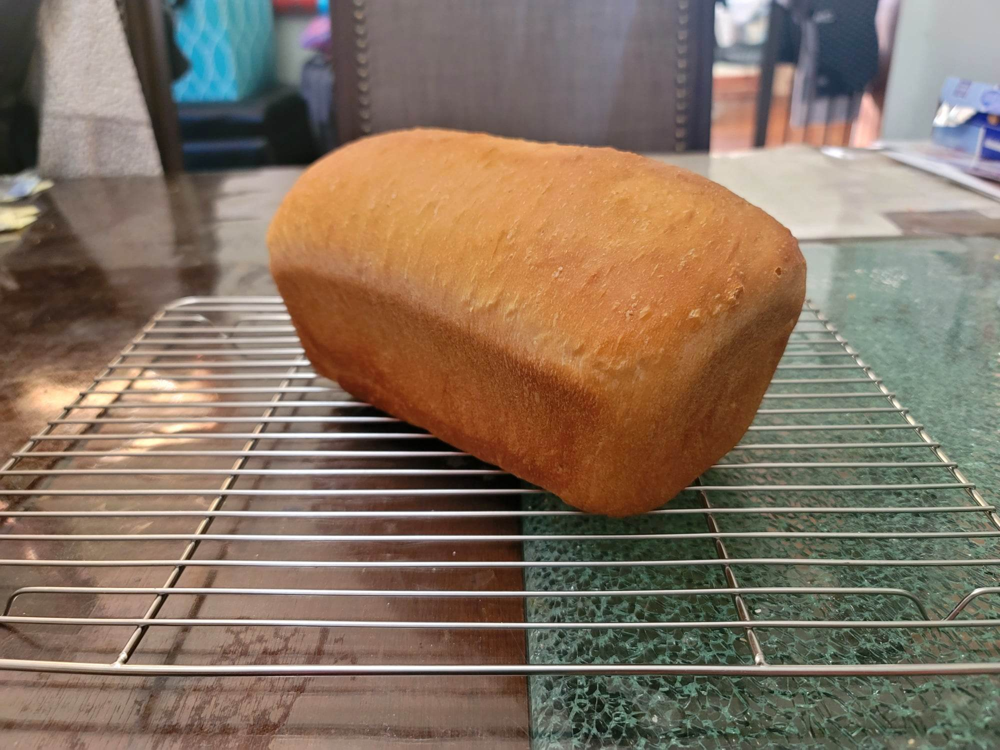

White Bread

Ingredients:
- 284 - 340 g Water
- 32 g Honey
- 2 1/4 tsp Instant yeast
- 11 g Salt
- 28 g Butter, softened
- 480 g Flour
- 37 g Milk powder
Instructions:
- Combine all the ingredients into the bowl of a stand mixer. Mix on the second lowest setting until it forms a smooth dough
- Place the dough into a greased sealable container and cover. Let rise for 60-90 minutes, or until doubled in size.
- Deflate the dough and flatten into a rectangle. Then roll it into a 9" log. Place it into a greased 9x5 loaf pan, cover, and let rise for another 60-90 minutes, or until it has crowned 1 - 1 1/2" over the rim of the pan.
- Meanwhile, preheat the oven to 350 degrees Fahrenheit.
- Bake the bread for 20 minutes. Then tent it with foil and bake another 15-20 minutes or until the internal temperature reads 195-200 degrees Fahrenheit.
- Remove the bread from the oven and transfer from the loaf pan onto a wire rack. Let cool completely before slicing and serving.